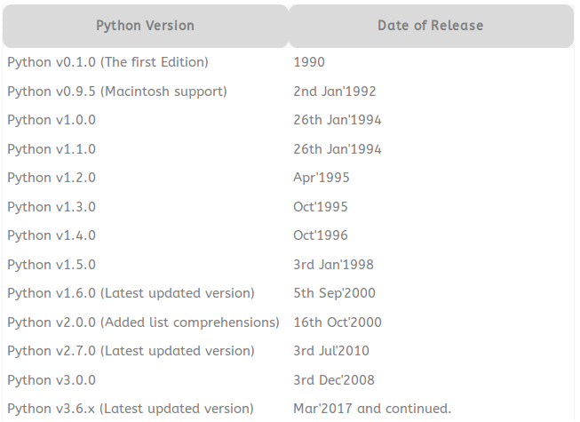

Pada Code lab ini kita akan belajar mengenai python programming
Apa yang akan kita pelajari?
- Apa itu Python dan kenapa menggunakan Python.
- Pengenalan Syntax pada python.
- Variabel dan Tipe Data
- Indexing dan Slicing
- Operator
- Control Flow
- Tuple, List, Dict
- Function
- args & kwargs
- Class
- Debuging
- Testing (basic)
Apa saja alat-alat yang diperlukan?
- Operating System yang telah terinstall Python
- Text Editor (VIM, VSCode, Sublime Text, etc)
- IDE (PyCharm) (optional)
Apa Itu Python?
Python is an interpreted, object-oriented, high-level programming language with dynamic semantics.
Python dibuat oleh Guido Van Rossum, edisi pertama python dirilis pada tahun 1990 (v.0.1.0)
Berikut daftar rilis python
Python digunakan untuk membuat berbagai macam program, seperti: Web App, Scientific, GUI (Desktop) App, Mobile App, IoT, Game, etc
Kenapa menggunakan Python?
- Open Source
- Sintaks sederhana, jelas, fleksibel, mudah dipelajari.
- Memiliki Standart library yang sangat banyak.
- Dapat dijalankan di Linux, Mac, Windows bahkan perangkat mobile.
- Dipercaya beberapa perusahan besar seperti Google, YouTube, Dropbox, Yahoo, etc.
- Coba dan rasakan sendiri manfaatnya :)
Python 2 vs Python 3
Ada 2 versi python yang saat ini masih aktif di kembangkan, yaitu python 2 dan python 3.
Apa Perbedaannya?
Python versi 2 merupakan versi yang banyak digunakan saat ini, baik dilingkungan produksi dan pengembangan.
Python 2 akan disupport sampai tahun 2020, setelah itu hanya python 3 yang akan di support.
Sementara Python versi 3 adalah pengembangan lanjutan dari versi 2.
Python 3 memiliki lebih banyak fitur dan improvment dibandingkan Python 2.
Menjalankan Python
Didalam python, kita bisa menjalakan python dengan 2 mode, yaitu mode interactive shell dan mode execute file python
Mode Interactive Shell
Contoh Penggunaan dengan mode interactive, buka terminal dan ketikan command python
me@RevsTech:~/CODER/codelabs/python-codelab$ python
Python 2.7.12 (default, Nov 19 2016, 06:48:10)
[GCC 5.4.0 20160609] on linux2
Type "help", "copyright", "credits" or "license" for more information.
>>> print "Hello World!"
Hello World!
>>>
>>> import math
>>> dir(math)
['__doc__', '__name__', '__package__', 'acos', 'acosh', 'asin', 'asinh', 'atan', 'atan2', 'atanh', 'ceil', 'copysign', 'cos', 'cosh', 'degrees', 'e', 'erf', 'erfc', 'exp', 'expm1', 'fabs', 'factorial', 'floor', 'fmod', 'frexp', 'fsum', 'gamma', 'hypot', 'isinf', 'isnan', 'ldexp', 'lgamma', 'log', 'log10', 'log1p', 'modf', 'pi', 'pow', 'radians', 'sin', 'sinh', 'sqrt', 'tan', 'tanh', 'trunc']
>>> help(math.pow)
----
Help on built-in function pow in module math:
pow(...)
pow(x, y)
Return x**y (x to the power of y).
Mode Execute File
Contoh Penggunaan mode execute file
Buat file baru bernama hello.py kemudian edit file tersebut menjadi seperti berikut:
me@RevsTech:~/CODER/codelabs/python-codelab$ touch hello.py
me@RevsTech:~/CODER/codelabs/python-codelab$ vim hello.py
# file hello.py
print "Hello World!"
Kemudian setelah itu jalankan file tersebut
me@RevsTech:~/CODER/codelabs/python-codelab$ python hello.py
Hello World!
Setalah kita selesai installasi segala keperluan dan mencoba menjalankan python, mari kita ketahui penulisan syntax-syntax dasar pada python.
1. Penulisan Statement
Statement adalah sebuah instruksi atau kalimat perintah yang akan dieksekusi oleh komputer.
print("Hello World!")
print("Python Codelab")
name = "Edi Santoso"
print("Hello"); print("World!"); print("Learning Python")
first_name = "Edi"; last_name = "Santoso"
2. Penulisan String
Didalam python penulisan string bisa menggunakan 4 cara, yaitu menggunakan:
- tanda petik satu (
') - tanda petik dua (
") - triple tanda petik satu (
''') - triple tanda petik dua (
""")
book_name = 'Learn Python' # menggunakan tanda petik satu
author = "John Doe" # menggunakan tanda petik dua
isbn = '''ABC123''' # menggunakan triple tanda petik satu
note = """This Is Notes""" # menggunakan triple tanda petik dua
3. Penulisan Komentar
Ada beberapa cara penulisan komentar pada python, yaitu menggunakan:
- tanda petik satu (
') - tanda petik dua (
") - triple tanda petik satu (
''') - triple tanda petik dua (
""") - tanda pagar (
#)
'Ini Komentar'
"Ini Komentar"
'''Ini Komentar
Bisa dengan menambahkan baris'''
"""Ini Komentar
Bisa dengan menambahkan baris"""
# Ini Komentar
class PersegiPanjang:
"""Kelas Persegi Panjang
Digunakan untuk menentukan persegi panjang
"""
def __init__(self, panjang, lebar):
self.panjang = panjang
self.lebar = lebar
# Melihat dokumentasi class
print PersegiPanjang.__doc__
raw_input('\ntekan [enter] untuk melihat bantuan (dokumentasi) class: ')
help(PersegiPanjang) # Untuk melihat dokumentasi dari class
4. Penulisan Blok
Penulisan blok pada python harus menambahkan indentasi, indentasi bisa menggunakan tab, spasi, (2x/4x)
# blok if
if age > 25:
print(age)
print("Welcome")
# blok for
for i in range(10):
print i
# blok if
if age > 25:
print(age)
print("Welcome")
# blok for
for i in range(10):
print i
5. Penulisan Style Case
Syntax Python bersifat case sensitive, artinya variableIni dengan Variableini berbeda.
dalam penulisan style ada beberapa cara yang direkomendasikan
# Snake Case digunakan pada:
module_name, package_name, function_name, global_var_name, etc.
def func_hitung(num):
pass
# CamelCase digunakan pada:
ClassName, ExceptionName
class BookLibrary:
pass
# ALL CAPS digunakan pada:
GLOBAL_CONSTANT_NAME
DEFAULT_NAME = ['john', 'doe']
6. Menggunakan Package (importing)
Sepertihalnya di dalam bahasa pemrograman lainnya, python juga menyedikan function untuk importing package
# import semua package math
import math
from math import *
# import hanya method pow dari package math
from math import pow
# import method dan gunakan alias untuk nama method
from math import pow as pangkat
# import module didalam folder yang sama
from . import module
Membuat Variable
Variable di python bisa dibuat seperti berikut
variable_name = value
name = "Edi"
name2 = "Santoso"
age = 19
print
print name
print name2
print age
Menghapus Variabel
>>> name = "Edi Santoso"
>>> print name
Edi Santoso
>>> del name
>>> print name
Traceback (most recent call last):
File "", line 1, in
NameError: name 'name' is not defined
>>>
NameError itu artinya variable tersebut sudah tidak ada lagi.
Tipe Data
Jenis Tipe Data
Secara umum, tipe data pada python terdiri dari
- Strings
- Number
- Boolean
Tipe Data Strings
Penulisan string di dalam python menggunakan 4 cara yaitu:
name = 'Edi Santoso'
gender = "Male"
addrees = """
Jl. Suka Jaya No 20, RT 05,
Kelurahan Bunga, Jakarta
"""
work_address = '''
Jl. Pasir Putih KM 6,
Kelurahan Bintang, Jakarta
'''
Tipe Data Number
Contoh:
price = 15000 # int
weight = 12.5 # float
Tipe Data Boolean
Tipe data boolean adalah tipe data yang hanya memiliki dua nilai yaituTrue dan False atau 0 dan 1
Contoh:
active = True
running = 1
Konversi Tipe Data
Meskipun python telah otomatis mendeteksi jenis tipe data pada variabel, ada kalanya kita perlu merubah tipe data tersebut.
Contoh:
>>> a = 19
>>> b = 5
>>> a / b
3 # hasil akan 3 karena tipe data dari variable a dan b adalah integer
>>> a = 19
>>> b = 5
>>> float(a) / float(b)
3.8 # hasil 3.8 karena tipe data adalah float (decimal)
float() akan merubah nilai a menjadi 19.0 dan b menjadi 5.0
Didalam python setiap variable yang memiliki data strings bisa di cari/ambil index atau posisinya.
Contoh:
>>> s = "Hello World!"
>>> s[0] # Indexing pada posisi 0, ini adalah karakter pertama dari variable
'H'
>>> s[6] # Indexing pada posisi 6, ini berarti karakter nomor 7 dari variable
'W'
>>> s[:4] # Slicing dengan panjang 4 karakter dari depan
'Hell'
>>> s[4:] # Slicing semua karakter setelah karakter ke 4 dari depan
'o World!'
>>> s[2:4] # Slicing dari 4 karakter yang di mulai setelah karakter ke 2 dari variable
'll'
>>> s[2:5] # Slicing dari 5 karakter yang di mulai setelah karakter ke 2 dari variable
'llo'
>>> s[2:9:4] # Slicing, start, stop, step setiap 4 karakter di mulai setelah karakter ke 2 dari variable
'lW'
Didalam python setidaknya ada 5 jenis operator yang sering di temui, yaitu:
- Operator Aritmatika
- Operator Penugasan
- Operator Pembanding
- Operator Logika
- Operator Ternary
1. Operator Aritmatika
Operator aritmatika ini adalah operator yang seringkali digunakan
Operator aritmatika terdiri dari:
________________________________
Operator Simbol
--------------------------------
Penjumlahan +
Pengurangan -
Perkalian *
Pembagian /
Sisa Bagi %
Pemangkatan **
________________________________
>>> a = 5
>>> b = 3
>>> a + b
8
>>> a - b
2
>>> a * b
15
>>> a / b
1
>>> a % b
2
>>> a ** b
125
>>>
2. Operator Penugasan
Seperti namanya, operator ini digunakan untuk memberikan tugas pada variabel.
________________________
Operator Simbol
------------------------
Pengisian =
Penjumlahan +=
Pengurangan -=
Perkalian *=
Pembagian /=
Sisa Bagi %=
Pemangkatan **=
________________________
# Pengisian
a = 5
# Penjumlahan
a += 3 # ini sama halnya dengan a = a + 3
# Pengurangan
a -= 2 # ini sama halnya dengan a = a - 2
# Perkalian
a *= 10 # ini sama halnya dengan a = a * 10
# Pembagian
a /= 5 # ini sama halnya dengan a = a / 5
# Sisa Bagi
a %= 3 # ini sama halnya dengan a = a % 3
# Pemangkatan
a **= 4 # ini sama halnya dengan a = a ** 4
3. Operator Pembanding
Operator ini digunakan untuk membandingkan dua buah nilai.
_______________________________
Operator Simbol
-------------------------------
Lebih Besar >
Lebih Kecil <
Sama Dengan ==
Tidak Sama dengan !=
Lebih Besar Sama dengan >=
Lebih Kecil Sama dengan <=
_______________________________
>>> a = 8
>>> b = 3
>>> a > b
True
>>> a < b
False
>>> a == b
False
>>> a != b
True
>>> a >= b
True
>>> a <= b
False
>>>
4. Operator Logika
____________________________________
Nama Simbol pada Python
------------------------------------
Logika AND and
Logika OR or
Negasi/kebalikan not
____________________________________
>>> a = True
>>> b = False
>>> a and b
False
>>> a or b
True
>>> not a
False
>>>
5. Operator Ternary
Operator ternary sebenarnya tidak ada dalam Python, tapi python punya cara lain untuk menggantikan operator ini.
Pada bahas pemrograman lain, operator tenary biasanya menggunakan syntax seperti berikut
condition ? if true : if false
status = (arrived < 9) ? "Good" : "Bad"Didalam python syntax nya yaitu
<Nilai True> if Kondisi else <Nilai False>
status = "Good" if arrived < 9 else "Bad"
1. If Else Statements
if kondisi:
print "kondisi 1"
elif:
print "kondisi 2"
else:
print "yeah like it!"
2. Looping
Looping pada python mempunyai 2 cara, yaitu dengan for dan while
for
a = [0,1,2,3,4]
for data in a:
print data
# range(start,end,step) -> list
for x in range(7):
print x
for x in xrange(2,4):
print x
while
while(True):
print "Looping....."
loop = 'yes'
while(loop == 'yes'):
print "Looping..."
loop = raw_input("Loop again?")
while(True):
print "Looping..."
ask = raw_input("Loop again?")
if ask == 'no':
break
3. Try Except
Didalam exception ada 4 syntax yang bisa digunakan, yaitu
try
except
else dan
finnaly
try:
execute condition
except:
condition if raise exception
try:
execute condition
except Exception as e:
print(e) # print error exception message
finnaly:
always excute after all
def divide(x, y):
try:
result = x / y
except ZeroDivisionError:
print "division by zero!"
else:
print "result is", result
finally:
print "executing finally clause"
divide(3,4)
divide(3,0)
List adalah sebuah array jika kita ibaratkan dengan bahasa pemrograman sepeti PHP, JavaScript
di dalam list kita boleh mencapurkan banyak jenis data kedalam nya
# membuat list kosong
list_kosong = []
# atau bisa dengan
list_kosong = list()
# list dengan data
hobi = ['gaming', 'coding']
# list dengan campuran jenis data
rumah = ['meja', 2, True, 25.33]
Mengambil data dari list
List seperti array, yaitu nilai index di mulai dari 0
>>> hobi = ['membaca', 'coding', 'sepak bola', 'voli']
>>> hobi[0]
'membaca'
>>> hobi[3]
'voli'
>>>
Update data list
List bersifat mutable, artinya isinya bisa kita ubah-ubah.
>>> hobi = ['membaca', 'coding', 'sepak bola', 'voli']
>>> hobi[2]
'sepak bola'
>>> hobi[2] = 'bulu tangkis'
>>> hobi
['membaca', 'coding', 'bulu tangkis', 'voli']
>>>
Lainnya
>>> hobi = ["membaca", "coding", "sepak bola", "voli"]
>>> hobi.append('menulis')
>>> hobi
['membaca', 'coding', 'sepak bola', 'voli', 'menulis']
>>> hobi.count('membaca')
1
>>> hobi.extend(['menyanyi', 'berlari'])
>>> hobi
['membaca', 'coding', 'sepak bola', 'voli', 'menulis', 'menyanyi', 'berlari']
>>> hobi.index('voli')
3
>>> hobi.insert(2, 'menangis')
>>> hobi
['membaca', 'coding', 'menangis', 'sepak bola', 'voli', 'menulis', 'menyanyi', 'berlari']
>>> hobi.pop()
'berlari'
>>> hobi
['membaca', 'coding', 'menangis', 'sepak bola', 'voli', 'menulis', 'menyanyi']
>>> hobi.remove('menyanyi')
>>> hobi
['membaca', 'coding', 'menangis', 'sepak bola', 'voli', 'menulis']
>>> hobi.reverse()
>>> hobi
['menulis', 'voli', 'sepak bola', 'menangis', 'coding', 'membaca']
>>> hobi.sort()
>>> hobi
['coding', 'membaca', 'menangis', 'menulis', 'sepak bola', 'voli']
>>> del hobi[2]
>>> hobi
['coding', 'membaca', 'menulis', 'sepak bola', 'voli']
>>> hobi[1:3]
['membaca', 'menulis']
>>> hobi
['coding', 'membaca', 'menulis', 'sepak bola', 'voli']
>>> hobi_dia = ['stalking', 'berpuisi']
>>> hobi_kita = hobi + hobi_dia
>>> hobi_kita
['coding', 'membaca', 'menulis', 'sepak bola', 'voli', 'stalking', 'berpuisi']
>>>
# List Multi dimensi
data = [
[1,2,3,4],
[10,20,30],
['dia', 'kita', 'mereka']
]
Python Dictionary adalah data tipe yang menyediakan keys dan values
Initialize dict
>>> a = {}
>>> b = dict()
>>> a == b
True
>>>
>>> bio = {'name': 'Edi Santoso', 'age': 19}
>>> bio
{'age': 19, 'name': 'Edi Santoso'}
>>> bio['age']
19
>>> bio['address'] = 'Jakarta'
>>> bio
{'age': 19, 'name': 'Edi Santoso', 'address': 'Jakarta'}
>>> bio.keys()
['age', 'name', 'address']
>>> bio.values()
[19, 'Edi Santoso', 'Jakarta']
>>> bio.items()
[('age', 19), ('name', 'Edi Santoso'), ('address', 'Jakarta')]
>>> del bio['address']
>>> bio
{'age': 19, 'name': 'Edi Santoso'}
>>> bio.get('age')
19
>>> bio.get('ages', None)
>>>
Tuple seperti List, tetapi bersifat imutable atau tidak bisa di ubah-ubah
>>> tup = tuple()
>>> tup1 = ()
>>> tup == tup1
True
>>> tup = (1,2,3)
>>> tup1 = ('a','b','c')
>>> tup2 = tup + tup1
>>> tup2
(1, 2, 3, 'a', 'b', 'c')
>>> tup
(1, 2, 3)
>>> tup[2]
3
>>> del tup[2]
Traceback (most recent call last):
File "", line 1, in
TypeError: 'tuple' object doesn't support item deletion
>>>
Function pada python di mulai dengan def kemudian di ikuti nama function
# create function
def func_name():
prin "Hello World!"
# run/call function
funct_name()
# function with parameter
def call_name(name):
print "Hello %s, Good Morning" % name
call_name('edi')
# function with return
def luas_persegi(sisi):
luas = sisi * sisi
return luas
print "Luas Persegi: %d" % luas_persegi(3)
# Factirial
def factorial(n):
if n in (0,1):
return 1
return factorial(n - 1) * n
print factorial(5)
Anonymous Function
Python mempunyai anonymous function yaitu menggunakan lambda
def sum_data(a,b):
return a + b
sum_data_anon = lambda a, b: a + b
print sum_data(5,5)
print sum_data_anon(5,5)
*args dan **kwargs pada dasarnya adalah sebuah variabel. Tetapi terkadang juga disebut dengan magic variable, karena kemampuannya yang aneh.
Tetapi *args dan **kwargs digunakan sebagai parameter pada function.
def call_name(*name):
print "List name"
for n in name:
print n
call_name('john', 'doe')
Perbedaan dari *args dan **kwargs
Perbedaan yang mudah di lihat adalah *args menggunakan satu tanda bintang, sedangkan **kwargs menggunakan dua tanda bintang.
*bintang satu artinya akan membuat sebuah parameter dengan tipetuple**bintang dua artinya akan membuat sebuah parameter dengan tipedictionary
# buat *args
def call_name(*name):
print name
# buat **kwargs
def biodata(**bio):
print bio
# call function
call_name('john', 'doe')
biodata(name='edi', address='jakarta')
# output
('john', 'doe')
{'name': 'edi', 'address': 'jakarta'}
File Mangement pada python ini adalah salah satu dasar python yang harus di pahami, karena kita didalam pengembangan kita terkadang akan sering menemui hal ini.
Membaca File
# open file
open_file = open("file.txt", "r")
# read each line of file -> return list
print open_file.readlines()
# read all of file -> return string
# print open_file.read()
# looping data
for data in open_file:
print data
# close file
open_file.close()
## opening with `with` loop
with open("file.txt", "r") as datas:
print datas
....
# data to wirte
text = "Name: Edo\nAddress: Jakarta"
# open file with write mode
bio = open("bio.txt", "w")
# write data
bio.write(text)
# close file
bio.close()
Managament Json dengan python
Mengelola json dari sebuah file
# buat file `data.json`
{
"name": "Edo",
"status": "member",
"images": {
"image_small": "https://url-example.com/image_small.jpg",
"image_medium": "https://url-example.com/image_medium.jpg",
"image_large": "https://url-example.com/image_large.jpg",
}
}
## read it!
# python `json` lib
import json
file_json = open("data.json", "r").read()
data = json.loads(file_json)
print data
print data['name']
print data['images']['image_medium']
import urllib
import json
URL = "https://hacker-news.firebaseio.com/v0/item/16081120.json?print=pretty"
# open it
response = urllib.open(URL)
# parsing data
data = json.loads(response.read())
print data['id'], data['by'], data['url']
Konsep Class Pada Python
class ClassName:
# init instance or constructor
def __init__(self, key):
self.key = key
# private method
def __private_method(self, private):
pass
# public method
def public_method(self):
pass
call = ClassName('key')
print call.public_method()
print call.__private_method() # will error
class PersegiPanjang:
''' Class Persegi Panjang
Ini docstring
'''
def __init__(self, panjang, lebar):
self.panjang = panjang
self.lebar = lebar
def hitung_luas(self):
return self.panjang * self.lebar
def hitung_keliling(self):
return (2*self.panjang) + (2*self.lebar)
psg = PersegiPanjang(30, 6)
print psg.hitung_luas()
print psg.hitung_keliling()
Python Inheritance
class Mencetak:
def set_kata(self, kata):
self.kata = kata
def cetak(self):
print "Kata yang ingin anda cetak :", self.kata
class Printer(Mencetak):
def tambah_kata(self, kata):
self.kata = self.kata + kata
c = Mencetak()
c.set_kata('hay')
c.cetak()
p = Printer()
p.set_kata("Buku Python")
p.tambah_kata(" Bisa beli di amazon.com")
p.cetak()
class Parent(object):
def override(self):
print "PARENT override()"
def implicit(self):
print "PARENT implicit()"
def altered(self):
print "PARENT altered()"
class Child(Parent):
def override(self):
print "CHILD override()"
def altered(self):
print "CHILD, BEFORE PARENT altered()"
super(Child, self).altered()
print "CHILD, AFTER PARENT altered()"
dad = Parent()
son = Child()
dad.implicit()
son.implicit()
dad.override()
son.override()
dad.altered()
son.altered()
Testing pada python memeliki beberapa library, pada contoh ini hanya menggunakan unittest test bawaan python.
import unittest
class TestStringMethods(unittest.TestCase):
def test_upper(self):
self.assertEqual('foo'.upper(), 'FOO')
def test_isupper(self):
self.assertTrue('FOO'.isupper())
self.assertFalse('Foo'.isupper())
def test_split(self):
s = 'hello world'
self.assertEqual(s.split(), ['hello', 'world'])
# check that s.split fails when the separator is not a string
with self.assertRaises(TypeError):
s.split(2)
if __name__ == '__main__':
unittest.main()
$ python test_example.pyUntuk detail tentang testing bisa dilihat disini
Python digunakan juga untuk membangun sebuah web aplication, berikut list beberapa framework yang sering digunakan
Djangoa high-level Python Web Framework which follows MVT (model-view-template) architecturalFlaska microframework for Python based on Werkzeug, Jinja 2 and good intentions.Sanic is Flask-like Python 3.5+ web server that’s written to go fast.- dan
masih banyak lagi
1. Debugging
Ketika kita mengembangkan sebuah aplikasi, kita tidak terlepas yang namanya debuging.
Jika di dalam JavaScript kita bisa debuging lewat inspect element maupun menggunakan console.log(), didalam python kita bisa menggunakan print ataupun pdb.
pdb
def name_aa():
print "aaa"
import pdb;pdb.set_trace()
name_aa()
2. Virtualenv
Jadi mudahnya virtualenv ini digunakan untuk membuat environment python yang terisolasi yang berfungsi untuk memisahkan module-module / package dari python.
sudo pip install virtualenvContoh penggunaan:
# create folder $ mkdir my-app $ cd my-app # create environment $ virtualenv env # activate environment $ source env/bin/activate # install a package (env)$ pip install flask # deactivate environment $ deactivate
Selamat anda telah selesai mengikuti codelab python ini.
Ringkasan
- Syntax dasar pada python
- Variabel dan Tipe Data
- Python Operator
- List, Dict, Tuple
- Function
- Class
- Debuging